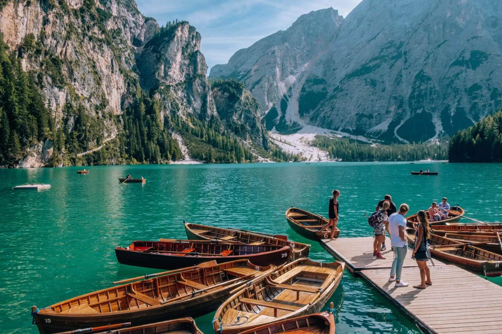
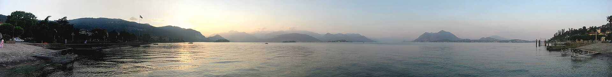
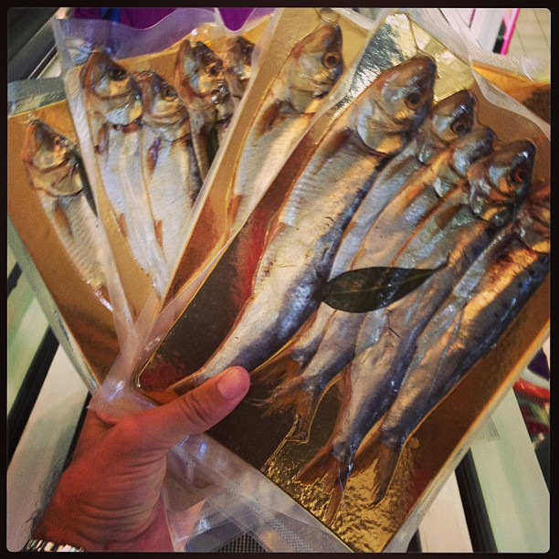
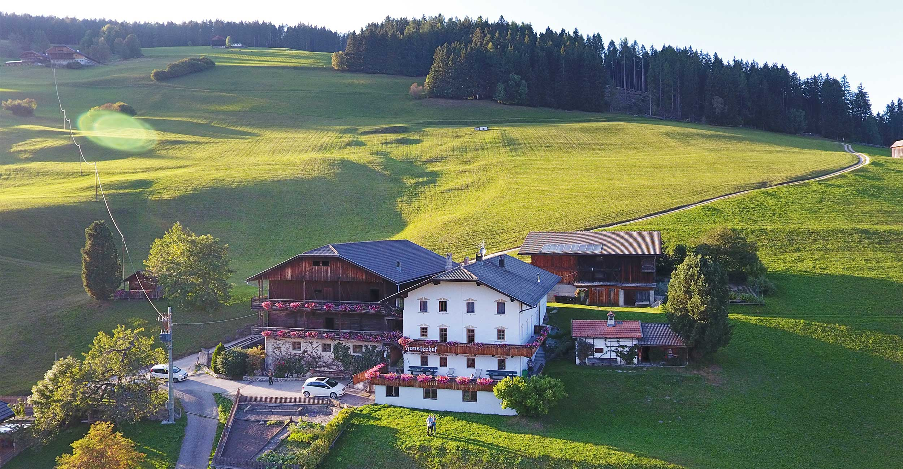
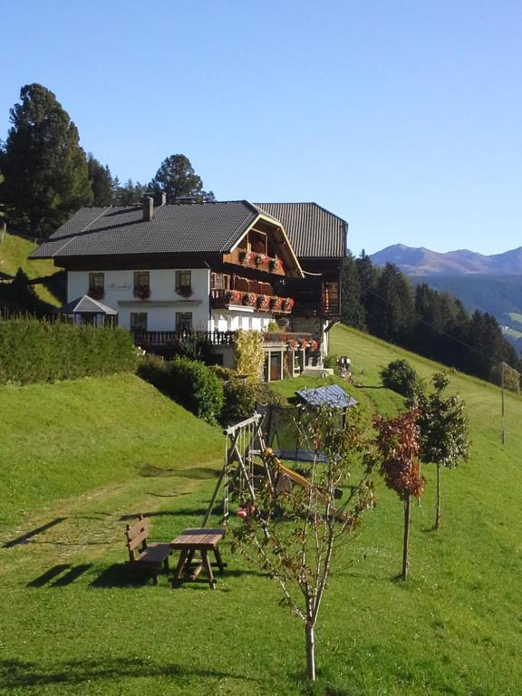
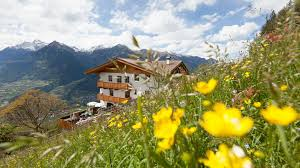
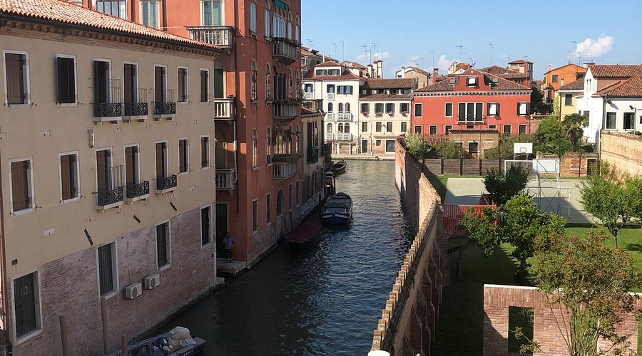
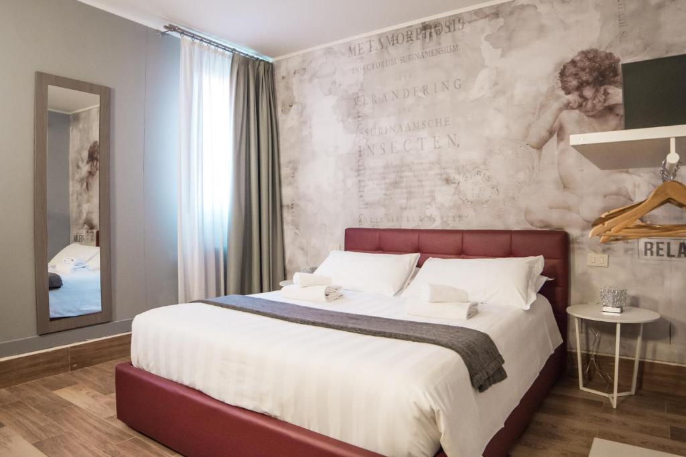

How This Deck Works
Navigation
→ Right: Next day
↓ Down: Details for current day
O: Bird's-eye overview of all slides
Swipe: Works on phone too
Icons Legend
🍝 Trattoria 🍷 Osteria 🦑 Bacaro
🍽 Ristorante 🏔 Rifugio 🍺 Gasthaus
🍦 Gelateria ☕ Caffe 🌙 Nightlife
🌾 Agriturismo 🛏 B&B 🐄 Maso 🏨 Hotel
🥾 Hike 🛣 Scenic Drive 🏖 Swim ☂ Rain Plan
Each Day Includes
Slide 1: Hero photo + day overview
Slide 2: Drive details + schedule
Slide 3: Sights & activities (with images)
Slide 4: Where to eat (with local dishes)
Slide 5: Gelato, sleep, tips
Price Tags
Every place is annotated with:
~80-120 EUR expected price
MUST TRY special tags
Links to Google Maps for easy navigation
⚠️ Book Ahead
Do these BEFORE the trip - they sell out
Pre-book at parclick.it | 5-15 EUR/day Mestre + train
navigazionelaghi.it | ~15-20 EUR/pp | Every 30 min · Walk-up OK
Verify last departure (~18:00-18:30) at funiviedelbaldo.it
40 EUR/car · Verify hours at drei-zinnen.bz

A/B Plans available
Days 1-8 now have alternative timings (Plan A / Plan B per day). Mobile guide.html has interactive toggle. This slide deck shows Plan A baseline; consult the mobile guide on the road.
Day 1 — Drive & Schedule
🚗 MXP Airport → Stresa
🛣 Scenic: Autostrada to Arona, then SS33 lake shore for last 20 km
| 13:30 | Arrive Stresa, drop bags, quick lunch |
| 15:00 | ⛴ Borromean Islands by ferry |
| 18:00 | 🚶 Lungolago evening passeggiata |
| 20:00 | 🍷 Dinner |



Day 1 — Borromean Islands


Isola Bella on Maps | Isola dei Pescatori on Maps


Day 1 — Where to Eat


Terrace overlooking lake + Borromean Islands. Locals' favorite.
Maps


Day 1 — Gelato, Sleep & Tips


🌙 Evening
Stresa is quiet at night. Lungolago passeggiata with a drink. Aperitivo at your hotel terrace - sunset over the islands.


Day 2 — Drive & Schedule
🚗 Stresa → Sasso del Ferro → Como
🛣 Scenic: SS34 lake shore. Option: Laveno-Intra car ferry (~20 min, ~15 EUR)
| 09:00 | 🚡 Sasso del Ferro - cable car, panoramic peak |
| 10:30 | 🚗 Drive to Como (SS34 scenic) |
| 12:00 | 🍝 Lunch in Brunate or Como |
| 13:30 | 🚞 Brunate funicular + Faro Voltiano |
| 16:00 | 🚶 Greenway Colonno-Sala Comacina |
| 20:00 | 🍷 Dinner in Como |


Day 2 — Sights & Activities


Maps

Maps


E-bikes from Econoleggio Como Lake. Menaggio-Sorico route is gorgeous.


🏖 Swim: Lido di Lenno or beaches near Colonno - crystal water
Day 2 — Where to Eat
Lunch - Brunate


Killer lake view from Brunate hilltop. 10 min from funicular. Order game + local dishes.
Maps

Dinner - Como

Feels like an old village inn. Cortesella, Como.
Maps


Day 2 — Gelato, Sleep & Tips


🌙 Evening
Walk the lungolago, drink at a bar on Piazza Cavour watching the lake.
🛏 Where to Sleep


Day 3 — Drive & Schedule
🚗 Como → Sirmione
🛣 A4 autostrada - save scenic energy for Strada della Forra tomorrow!
| 08:30 | 🚗 Depart Como (2.5h via Bergamo/Brescia) |
| 13:00 | 🍝 Seated lunch Sirmione old town |
| 14:30 | Wander old town, Scaliger Castle |
| A/B fork — afternoon: | |
| A 15:00 | 🚗 Drive to Malcesine (~50 min) |
| A 16:00 | 🚡 Monte Baldo cable car (1760m) |
| A 18:15 | Wander Malcesine old town |
| B 15:00 | 🏛 Grotte di Catullo (1h) |
| B 16:00 | 🏖 Jamaica Beach — thermal swim (1.5h) |
| B 18:30 | 🧖 Optional Aquaria Spa |
| 20:30 | 🍷 Dinner |
🔀 Plan A — Monte Baldo
Cable car from Malcesine → 1760m. Ridge trails, Dolomites visible. Active + scenic. Verify last departure at funiviedelbaldo.it.
🔀 Plan B — Sirmione + Thermal
Grotte di Catullo Roman ruins + Jamaica Beach (free thermal swim). Optional Aquaria Spa later. Chill afternoon.
Day 3 — Where to Eat
Lunch - Sirmione (both plans)
Maps
Maps
Maps
Dinner
Maps
Maps
Must Try

🏖 Swim
Jamaica Beach - flat rocks, popular with locals.
Maps
🌙 Nightlife
☂ Rain
Day 3 — Where to Sleep


Day 4 — Drive & Hike
🛣 Strada della Forra DO NOT MISS
6 km of INSANE hairpins through a gorge carved in rock. Most spectacular road in Europe. James Bond (Quantum of Solace).
🥾 Sentiero del Ponale
6 km RT • 2-2.5h • +200m • Easy-moderate
Old road carved into CLIFF FACE above Lake Garda. Tunnels through rock, views straight down to turquoise water.
Lunch at Ponale Alto Belvedere restaurant at the turnaround.
Maps
| 08:30 | 🛣 Drive via Strada della Forra |
| 10:00 | 🥾 Sentiero del Ponale hike |
| 12:30 | 🍽 Lunch Riva del Garda |
| 14:00 | 🚗 Drive Riva → Molveno |
| 15:30 | 🏖 Molveno beach + swim |
| 17:30 | 🚶 Fortini di Napoleone walk |
Dinner - Molveno
Maps
Maps
🏖 Swim
🌙 / ☂
☂ Climbing Stadium Arco - indoor climbing wall. Or Castello di Stenico (20 min).
Day 4-5 — Where to Sleep (2 nights)


Day 5 — Hike & Activities
🥾 Rifugio Croz dell'Altissimo
~6 km RT from Pradel • 3h • +400m • Medium
Take cabinovia from Molveno to Pradel (cable car does first 800m!). Forest paths into the heart of Brenta Dolomites. Rock walls towering above.
EAT LUNCH HERE: canederli, polenta, strudel with Dolomite panorama.
Bring a layer - cooler up there.
Maps
| 08:00 | 🚡 Cabinovia up to Pradel |
| 08:30 | 🥾 Hike to Rifugio + lunch there |
| 12:00 | 🚡 Cabinovia down |
| 13:00 | 🏖 Chill at Molveno lake |
| 14:30 | 🚗 Drive to Lago di Tovel |
| 15:00 | 🚶 Walk around Tovel (4 km, 1.5h) |
| 18:00 | 🏖 Beach, evening walk |
Lago di Tovel - "The Red Lake"
4 km loop, flat, ~1.5h. Beautiful forest setting. 30 min drive from Molveno.
Maps
🍽 Dinner: Same Molveno options as Day 4 - try what you missed.
☂ Rain: Andalo Life Park (pool, spa, 10 min). Or Castel Thun (medieval, frescoed rooms, 30 min).
Sleep
Day 6 — Drive & Activities
🚗 Molveno → Pragser Wildsee
🛣 Val di Non → Val di Sole → Val Pusteria. All mountain roads. Every turn = Dolomite postcard. Fill up gas!
| 08:30 | 🚗 Scenic drive through Dolomites |
| 11:00 | 🚶 Lago di Braies loop (3.5 km, 1.5h) |
| 12:30 | 🚣 Rent rowing boat on the lake |
| 13:00 | 🍽 Lunch near the lake |
| 14:30 | 🏘 Explore Val Pusteria villages |
| 19:00 | 🍺 Dinner at a Gasthaus |
End of May = road OPEN!
Maps
🏖 Swim: Braies = ICE COLD (1496m, ~12-14C). Feet in = yes. Full swim = legend status.
🌙 Nightlife: Beers at the Gasthaus. Or Brunico (30 min) for bars.
☂ Rain: MMM Messner Mountain Museum in Brunico. Or: enjoy the maso breakfast + chill. You've earned it.
Day 6 — Where to Sleep



Curated South Tyrol farm stays. Pick your style.
gallorosso.it
Day 7 — Drive & Schedule
🚗 Val Pusteria → Venice
🛣 South through Dolomite foothills via Belluno. Alpine peaks → rolling hills → Veneto plain.
| 08:00 | 🥐 Epic Tyrolean breakfast at the maso |
| 09:00 | 🚗 Drive south |
| 11:00 | 🏖 Lago di Santa Croce swim stop |
| 13:30 | 🅿 Park car (Mestre) |
| 14:00 | 🍽 Lunch in Venice |
| 15:00 | 🚶 Dorsoduro, San Marco, Rialto |
| 19:30 | 🦑 Bacaro tour Cannaregio |
🦑 Bacaro Tour (THIS IS THE WAY)
Hop between 3-4 bacari. Eat cicchetti (small bites) at each. Drink an "ombra" (small wine). 3-4 stops = dinner.
Day 7 — Gelato, Sleep & Tips
🍦 Gelato
Must-try cicchetti
Sarde in saor (sweet & sour sardines)
Polpette (meatballs) + Frittura
🌙 Nightlife
☂ Rain
🛏 Where to Sleep (1 night)


Best value in Venice. Near Alla Vedova, Al Timon, Fondamenta della Misericordia.
Maps
Day 8 — Last Day
🚗 Venice → Milan
Optional: stop in Verona (on the route) - 1h walk: Arena, Piazza delle Erbe, espresso.
| 07:30 | ☕ Morning Venice - Rialto fish market, cornetto + caffe |
| 10:00 | 🚗 Get car, leave Venice |
| 10:30 | 🚗 Drive to Milan (opt. Verona stop) |
| 13:00 | 🍝 Lunch in Milan - LAST MEAL |
| 14:00 | 🏛 Duomo, Galleria, Navigli |
| 16:00 | 🍦 Gelato at Artico |
| 17:00 | 🚗 Drive to MXP, return car |
| 20:00 | ✈ Flight |
🍝 Last Italian Meal (make it count)
Maps
Maps
Maps